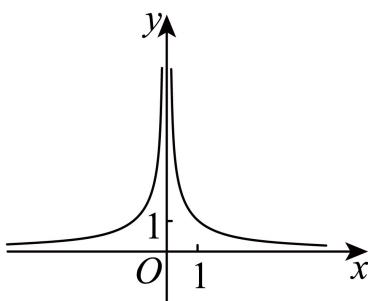

定义域、指数对数与分段求值 明确真数、底数及分段范围，由给值或参数约束求解。
嘉定 · 第1题 ★☆☆☆☆ · 教师预估 本题资料或解析有待核事项，预览不可作为已审定成品。
函数 y = log 2 ( x 2 − 1 ) y = \log _ { 2 } ( x ^ { 2 } - 1 ) y = log 2 ( x 2 − 1 )
嘉定 · 第13题 ★★☆☆☆ · 教师预估 本题资料或解析有待核事项，预览不可作为已审定成品。
已知a为正数，则 ∗ a > 3 ∗ ^ { * } a > 3 ^ { * } ∗ a > 3 ∗ a a > a 3 , { } ^ { } a ^ { a } > a ^ { 3 } { } ^ { , } a a > a 3 ,
A. 充分非必要条件
B. 必要非充分条件
C. 充要条件
D. 既非充分也非必要条件
奉贤 · 第4题 ★★☆☆☆ · 教师预估 本题资料或解析有待核事项，预览不可作为已审定成品。
设 f ( x ) = { ln x + 1 , x > 0 , 2 x + 1 , x ≤ 0. f(x)=\begin{cases}\ln x+1,&x>0,\\2^x+1,&x\leq 0.\end{cases} f ( x ) = { ln x + 1 , 2 x + 1 , x > 0 , x ≤ 0. f ( x 0 ) = 1 f(x_0)=1 f ( x 0 ) = 1 x 0 = x_0= x 0 =
奉贤 · 第14题 ★★★☆☆ · 教师预估 本题资料或解析有待核事项，预览不可作为已审定成品。
函数 y = log 2 sin x + log 2 cos x y = \log _ { 2 } \sin x + \log _ { 2 } \cos x y = log 2 sin x + log 2 cos x
A. 函数是偶函数
B. 函数定义域是 ( 0 , π 2 ) \left( 0 , { \frac { \pi } { 2 } } \right) ( 0 , 2 π )
C. 函数最大值−1
D. 函数的最小正周期为π
奉贤 · 第17题 ★★★☆☆ · 教师预估 本题资料或解析有待核事项，预览不可作为已审定成品。
已知函数 y = f ( x ) y = f \left( x \right) y = f ( x ) f ( x ) = a x f \left( x \right) = a ^ { x } f ( x ) = a x [ a > 0 [ a > 0 [ a > 0 . a ≠ 1 ) . a \neq 1 ) . a = 1 ) ⋅ y = f ( x ) \boldsymbol { \cdot } \boldsymbol { y } = \boldsymbol { f } \left( \boldsymbol { x } \right) ⋅ y = f ( x ) f ( ∣ 2 x − 1 ∣ ) > f \left( \left| 2 x - 1 \right| \right) > f ( ∣ 2 x − 1 ∣ ) > Φ : x ∈ ( 0 , 1 ] { \bf \Phi } _ { : x } \in ( 0 , 1 ] Φ : x ∈ ( 0 , 1 ] f ( x 2 + 2 ) f \left( x ^ { 2 } + 2 \right) f ( x 2 + 2 )
宝山 · 第8题 ★★☆☆☆ · 教师预估 …9 a = 4 b = m 9 ^ { a } = 4 ^ { b } = m 9 a = 4 b = m 1 a + 1 b = 2 { \frac { 1 } { a } } + { \frac { 1 } { b } } = 2 a 1 + b 1 = 2
崇明 · 第8题 ★★☆☆☆ · 教师预估 已知 f ( x ) = { 2 x − 1 , x > 1 x − 1 , x ≤ 1 f \left( x \right) = \left\{ { \begin{array} { l } { 2 ^ { x } - 1 , x > 1 } \\ { x - 1 , x \leq 1 } \end{array} } \right. f ( x ) = { 2 x − 1 , x > 1 x − 1 , x ≤ 1
徐汇 · 第2题 ★☆☆☆☆ · 教师预估 本题资料或解析有待核事项，预览不可作为已审定成品。
已知函数 y = f ( x ) y=f(x) y = f ( x ) f ( x ) = { ln x , x > 0 , − 1 , x ≤ 0 , f(x)=\begin{cases}\ln x,&x>0,\\-1,&x\le0,\end{cases} f ( x ) = { ln x , − 1 , x > 0 , x ≤ 0 , f ( 1 ) = f(1)= f ( 1 ) =
松江 · 第3题 ★★☆☆☆ · 教师预估 本题资料或解析有待核事项，预览不可作为已审定成品。
函数 y = log ( 3 x + 1 ) + 1 y = \log { ( 3 x + 1 ) } + \sqrt { 1 } y = log ( 3 x + 1 ) + 1
浦东 · 第1题 ★☆☆☆☆ · 教师预估 本题资料或解析有待核事项，预览不可作为已审定成品。
若对数函数 ⟨ y = log a x ( a > 0 E a ≠ 1 ) \langle y = \log _ { a } x ( a > 0 \mathbb { E } a \neq 1 ) ⟨ y = log a x ( a > 0 E a = 1 )
浦东 · 第8题 ★★☆☆☆ · 教师预估 本题资料或解析有待核事项，预览不可作为已审定成品。
已知函数 y = f ( x ) y = f \left( x \right) y = f ( x ) f ( x ) = { ( 1 2 ) x − 3 , x ≤ 0 x 2 , x > 0 f \left( x \right) = { \left\{ { \left( { \frac { 1 } { 2 } } \right) } ^ { x } - 3 , x \leq 0 \right.} _ { x ^ { 2 } , x > 0 } f ( x ) = { ( 2 1 ) x − 3 , x ≤ 0 x 2 , x > 0 f ( x ) ≤ 1 f \left( x \right) \leq 1 f ( x ) ≤ 1
虹口 · 第2题 ★★☆☆☆ · 教师预估 函数 y = ln x x − 1 \ y = \ln { \frac { x } { x - 1 } } y = ln x − 1 x
虹口 · 第5题 ★☆☆☆☆ · 教师预估 设a > 0且 . a ≠ 1 . a \neq 1 . a = 1 { y = 2 + log a \{ y = 2 + \log _ { a } { y = 2 + log a
金山 · 第3题 ★☆☆☆☆ · 教师预估 本题资料或解析有待核事项，预览不可作为已审定成品。
已知函数y = f ( x ) y=f(x) y = f ( x ) f ( x ) = { 2 x , x ≤ 2 , log 2 x , x > 2 , f(x)=\begin{cases}2^x,&x\leq2,\\\log_2 x,&x>2,\end{cases} f ( x ) = { 2 x , log 2 x , x ≤ 2 , x > 2 , f ( 4 ) f(4) f ( 4 )
金山 · 第17题 ★★★☆☆ · 教师预估 已知常数 . a > 1 . a > 1 . a > 1 f ( x ) = log a ( x + 2 ) − log a ( 2 − x ) f \left( x \right) = \log _ { a } \left( x + 2 \right) - \log _ { a } \left( 2 - x \right) f ( x ) = log a ( x + 2 ) − log a ( 2 − x ) y = f ( x ) y = f \left( x \right) y = f ( x )
长宁 · 第7题 ★★☆☆☆ · 教师预估 已知 ∣ a ∈ { − 1 , − 2 3 , − 1 3 , 1 3 , 2 3 , 1 , 2 , 3 } | a \in \left\{ - 1 , - { \frac { 2 } { 3 } } , - { \frac { 1 } { 3 } } , { \frac { 1 } { 3 } } , { \frac { 2 } { 3 } } , 1 , 2 , 3 \right\} ∣ a ∈ { − 1 , − 3 2 , − 3 1 , 3 1 , 3 2 , 1 , 2 , 3 } y ˙ = x a \mathbf { \dot { \boldsymbol { y } } } = \mathbf { \boldsymbol { x } } ^ { a } y ˙ = x a a =

闵行 · 第7题 ★★☆☆☆ · 教师预估 已知函数 ⋅ y = { log 2 x , x > 0 f ( x ) , x < 0 \overset { } { \cdot } y = \left\{ \begin{array} { l l } { \log _ { 2 } x , } & { x > 0 } \\ { f \left( x \right) , } & { x < 0 } \end{array} \right. ⋅ y = { log 2 x , f ( x ) , x > 0 x < 0
闵行 · 第14题 ★☆☆☆☆ · 教师预估 下列函数中，在区间 ( 0 , + ∞ ) ( 0 , + \infty ) ( 0 , + ∞ )
A. y = x 1 2 y = x ^ { \frac { 1 } { 2 } } y = x 2 1
B. y = 1 x 2 + 1 y = { \frac { 1 } { x ^ { 2 } + 1 } } y = x 2 + 1 1
C. y = 2 x y = 2 ^ { x } y = 2 x
D. y = lg x y = \lg \left. x \right. y = lg x
青浦 · 第11题 ★★★☆☆ · 教师预估 本题资料或解析有待核事项，预览不可作为已审定成品。
若函数 ⟨ y = log 1 2 ( a x 2 − 8 x + 15 ) \langle y = \log _ { \frac { 1 } { 2 } } \left( a x ^ { 2 } - 8 x + 1 5 \right) ⟨ y = log 2 1 ( a x 2 − 8 x + 15 )
青浦 · 第13题 ★★☆☆☆ · 教师预估 本题资料或解析有待核事项，预览不可作为已审定成品。
已知x, y ∈ R y \in \mathbf { R } y ∈ R x > y : x > y _ { \mathrm { : } } x > y :
A. 1 x 2 + 1 < 1 y 2 + 1 \frac { 1 } { x ^ { 2 } + 1 } < \frac { 1 } { y ^ { 2 } + 1 } x 2 + 1 1 < y 2 + 1 1
B. ln ( x 2 + 1 ) > ln ( y 2 + 1 ) \ln \left( x ^ { 2 } + 1 \right) > \ln \left( y ^ { 2 } + 1 \right) ln ( x 2 + 1 ) > ln ( y 2 + 1 )
C. sin x > sin y \sin x > \sin y sin x > sin y
D. x 3 > y 3 x ^ { 3 } > y ^ { 3 } x 3 > y 3
黄浦 · 第9题 ★★☆☆☆ · 教师预估 若 f ( x ) = x 3 ‾ , g ( x ) = { f ( x ) , x ≥ 0 , f ( − x ) , x < 0 { \overline { { f \left( x \right) = x ^ { 3 } } } } , g \left( x \right) = { \left\{ \begin{array} { l l } { f \left( x \right) , x \geq 0 , } \\ { f \left( - x \right) , x < 0 } \end{array} \right. } f ( x ) = x 3 , g ( x ) = { f ( x ) , x ≥ 0 , f ( − x ) , x < 0 ∄ ∨ g ( x ) < − x \nexists \lor g ( x ) < - x ∄ ∨ g ( x ) < − x
奇偶、单调、对称与周期 利用对称和递推关系比较函数值，注意定义域与开端点。
嘉定 · 第9题 ★★★☆☆ · 教师预估 本题资料或解析有待核事项，预览不可作为已审定成品。
已知 f ( x ) = ln ( x + 1 ) , g ( x ) = { f ( x ) , x ≥ 0 f ( − x ) , x < 0 , f \left( x \right) = \ln { \left( x + 1 \right) } , g \left( x \right) = \left\{ { f \left( x \right) } , x \geq 0 \atop f \left( - x \right) , x < 0 , \right. f ( x ) = ln ( x + 1 ) , g ( x ) = { f ( − x ) , x < 0 , f ( x ) , x ≥ 0 ∣ g ( x ) > x + 2 − \mid g ( x ) > x + 2 - ∣ g ( x ) > x + 2 −
宝山 · 第5题 ★★☆☆☆ · 教师预估 …⟨ y = x 2 + a x + 1 , x ∈ [ b , 4 ] \langle y = x ^ { 2 } + a x + 1 , x \in [ b , 4 ] ⟨ y = x 2 + a x + 1 , x ∈ [ b , 4 ]
崇明 · 第13题 ★★☆☆☆ · 教师预估 本题资料或解析有待核事项，预览不可作为已审定成品。
下列函数中，在其定义域上既是奇函数又是严格增函数的是（ ）。
A. y = x 3 y=x^3 y = x 3
B. y = e x y=\mathrm e^x y = e x
C. y = lg x y=\lg x y = lg x
D. y = sin x y=\sin x y = sin x
徐汇 · 第5题 ★★☆☆☆ · 教师预估 本题资料或解析有待核事项，预览不可作为已审定成品。
设 a , b ∈ R , f ( x ) = x 3 + 3 sin x + b . a , b \in \mathbf { R } , f \left( x \right) = x ^ { 3 } + 3 \sin x + b . a , b ∈ R , f ( x ) = x 3 + 3 sin x + b . y = f ( x ) y = f \left( x \right) y = f ( x ) [ − a , 2 a − 1 ] [ - a , 2 a - 1 ] [ − a , 2 a − 1 ] a + b = a + b = a + b =
徐汇 · 第15题 ★★★☆☆ · 教师预估 本题资料或解析有待核事项，预览不可作为已审定成品。
已知函数 y = f ( x ) y=f(x) y = f ( x ) y = f ′ ( x ) y=f'(x) y = f ′ ( x ) R \mathbf R R y = f ( x ) y=f(x) y = f ( x ) y = f ′ ( x ) y=f'(x) y = f ′ ( x ) ( − ∞ , 0 ) (-\infty,0) ( − ∞ , 0 ) y = f ( x ) y=f(x) y = f ( x )
A.
x x x 1
2
3
4
f ( x ) f(x) f ( x ) 2.8188
1.0000
0.3644
0.2468
B.
x x x 1
2
3
4
f ( x ) f(x) f ( x ) 0.7580
1.0000
1.3188
1.7979
C.
x x x 1
2
3
4
f ( x ) f(x) f ( x ) 2.4132
1.0000
1.5885
4.1116
D.
x x x 1
2
3
4
f ( x ) f(x) f ( x ) 0.8664
1.0000
1.1188
1.2240
普陀 · 第12题 ★★★★☆ · 教师预估 本题资料或解析有待核事项，预览不可作为已审定成品。
设 a > b > 0 a > b > 0 a > b > 0 y = f ( x ) \boldsymbol { \mathfrak { y } } = \boldsymbol { \mathfrak { f } } \left( \boldsymbol { \mathfrak { x } } \right) y = f ( x ) f ( x ) = ∣ x − 1 x + ln x ∣ f \left( x \right) = \ \left| x - { \frac { 1 } { x } } + \ln x \right| f ( x ) = x − x 1 + ln x f ( a ) = f ( b ) f \left( a \right) = f \left( b \right) f ( a ) = f ( b ) ∣ x 2 + a x + 2 a b ∣ + ∣ x 2 − a x + 2 a b ∣ = 2 a ∣ x ∣ \left| x ^ { 2 } + a x + 2 a b \right| + \left| x ^ { 2 } - a x + 2 a b \right| = 2 a \left| x \right| x 2 + a x + 2 ab + x 2 − a x + 2 ab = 2 a ∣ x ∣
普陀 · 第15题 ★★★★☆ · 教师预估 本题资料或解析有待核事项，预览不可作为已审定成品。
设a > 0且 a ≠ 1 a \neq 1 a = 1 k 、m 、n 都是正整数，数列 { a n } \left\{ a _ { n } \right\} { a n } l a n = { ( a − 6 ) n + 21 , ( 1 ≤ n ≤ m ) a n − 3 , ( n > m ) \mathfrak { l } a _ { n } = \left\{ \begin{array} { l l } { ( a - 6 ) n + 2 1 , ( 1 \leq n \leq m ) } \\ { a ^ { n - 3 } , ( n > m ) } \end{array} \right. l a n = { ( a − 6 ) n + 21 , ( 1 ≤ n ≤ m ) a n − 3 , ( n > m ) { a n } \left\{ a _ { n } \right\} { a n } ∣ h k { \lvert h _ { k } } ∣ h k h k h _ { k } h k
A. 当m = 3时，a的取值范围是(1,6)
B. 不存在a和m的值，使得 . a 4 ∉ A . a _ { 4 } \notin A . a 4 ∈ / A
C. 当m = 4时，a的取值范围是(3, 6)
D. 存在a和m的值，使得 ⋅ a 5 ∉ A \cdot a _ { 5 } \notin A ⋅ a 5 ∈ / A
普陀 · 第18题 ★★★☆☆ · 教师预估 本题资料或解析有待核事项，预览不可作为已审定成品。
设函数 ⋅ y = f ( x ) \cdot y = f \left( x \right) ⋅ y = f ( x ) f ( x ) = sin ( ω x ) f \left( x \right) = \sin \left( \omega x \right) f ( x ) = sin ( ω x ) ω > 0 \omega > 0 ω > 0 m ∈ R m \in \mathbf { R } m ∈ R ⋅ x 0 ∈ ( 0 , m ) \cdot x _ { 0 } \in ( 0 , m ) ⋅ x 0 ∈ ( 0 , m ) y = f ( x + π 4 ) y = f \left( x + { \frac { \pi } { 4 } } \right) y = f ( x + 4 π ) (2) (8分) 若对任意的 ∣ x ∈ R . | x \in \mathrm { R } . ∣ x ∈ R . f ( x ) + f ( 2 π 3 − x ) = 0 f \left( x \right) + f \left( \frac { 2 \pi } { 3 } - x \right) = 0 f ( x ) + f ( 3 2 π − x ) = 0 y = f ( x ) y = f \left( x \right) y = f ( x ) ( − π 8 , 0 ) \left( - { \frac { \pi } { 8 } } , 0 \right) ( − 8 π , 0 ) y = f ( x ) y = f \left( x \right) y = f ( x )
杨浦 · 第4题 ★☆☆☆☆ · 教师预估 本题资料或解析有待核事项，预览不可作为已审定成品。
已知函数 [ y y = x 2 + a x + 1 ] \left[ { { y } \atop { y } } = { { x } ^ { 2 } } + a x + 1 \right] [ y y = x 2 + a x + 1 ]
松江 · 第9题 ★★☆☆☆ · 教师预估 本题资料或解析有待核事项，预览不可作为已审定成品。
已知函数 y = f ( x ) y = f \left( x \right) y = f ( x ) f ( x ) = { 3 x , x ≥ 0 3 x , 1 } f \left( x \right) = \left\{ { \displaystyle \frac { 3 ^ { x } , x \ge 0 } { 3 ^ { x } } } , 1 \right\} \left. \qquad \right. f ( x ) = { 3 x 3 x , x ≥ 0 , 1 } f ( m ) ≥ f ( m + 2 ) f ( m ) \geq f ( m + 2 ) f ( m ) ≥ f ( m + 2 )
松江 · 第16题 ★★★☆☆ · 教师预估 本题资料或解析有待核事项，预览不可作为已审定成品。
设函数y = f (x)与 y = g ( x ) y = g \left( x \right) y = g ( x ) b ∈ R b \in \mathbf { R } b ∈ R ∣ f ( a ) − f ( b ) ∣ ≤ ∣ g ( a ) − g ( b ) ∣ \left| f \left( a \right) - f \left( b \right) \right| \leq \left| g \left( a \right) - g \left( b \right) \right| ∣ f ( a ) − f ( b ) ∣ ≤ ∣ g ( a ) − g ( b ) ∣ y = g ( x ) y = g \left( x \right) y = g ( x ) y = f ( x ) − g ( x ) y = f \left( x \right) - g \left( x \right) y = f ( x ) − g ( x )
A. ①是真命题，②是假命题
B. 两个都是真命题
C. ①是假命题，②是真命题
D. 两个都是假命题
虹口 · 第8题 ★★★☆☆ · 教师预估 本题资料或解析有待核事项，预览不可作为已审定成品。
已知f ( x ) = { x 2 − x , x ≥ 0 , f ( − x ) , x < 0 , f(x)=\begin{cases}x^2-x,&x\geq0,\\f(-x),&x<0,\end{cases} f ( x ) = { x 2 − x , f ( − x ) , x ≥ 0 , x < 0 , f ( x ) ≤ 6 f(x)\leq6 f ( x ) ≤ 6
静安 · 第11题 ★★★☆☆ · 教师预估 本题资料或解析有待核事项，预览不可作为已审定成品。
记f ( x ) = x 2 + ( a 2 + b 2 − 1 ) x + a 2 + 2 a b − b 2 f(x)=x^2+(a^2+b^2-1)x+a^2+2ab-b^2 f ( x ) = x 2 + ( a 2 + b 2 − 1 ) x + a 2 + 2 ab − b 2 y = f ( x ) y=f(x) y = f ( x ) y y y
零点、极值与参数条件 将方程解数或最值存在性转化为图像与导数问题。
嘉定 · 第21题 ★★★★☆ · 教师预估 本题资料或解析有待核事项，预览不可作为已审定成品。
设A为非空集合，函数f (x)的定义域为D.若存在 Φ x 0 ∈ D \mathbf { \Phi } _ { \boldsymbol { x } _ { 0 } } \in \mathbf { D } Φ x 0 ∈ D f ( x ) − f ( x 0 ) ∈ A f \left( x \right) - f \left( x _ { 0 } \right) \in \mathrm { A } f ( x ) − f ( x 0 ) ∈ A 0 )为函数f(x)的一个A值，x0 为相应的A值点.A = [ − 2 , 0 ] , f ( x ) = sin x A = [ - 2 , 0 ] , f ( x ) = \sin x A = [ − 2 , 0 ] , f ( x ) = sin x x 0 = 2 k π + 1 2 π , k ∈ Z x _ { 0 } = 2 k \pi + \frac { 1 } { 2 } \pi , k \in { \bf Z } x 0 = 2 kπ + 2 1 π , k ∈ Z A = [ 0 , + ∞ ) , f ( x ) = − x , g ( x ) = x 2 + x + 1 A = [ 0 , + \infty ) , f ( x ) = - x , g ( x ) = x ^ { 2 } + x + 1 A = [ 0 , + ∞ ) , f ( x ) = − x , g ( x ) = x 2 + x + 1 ∇ f ( x ) , g ( x ) { \bf \nabla } f \left( x \right) , g \left( x \right) ∇ f ( x ) , g ( x ) A = ( − ∞ , 0 ] A = ( - \infty , 0 ] A = ( − ∞ , 0 ] f ( x ) = ln x + a x 2 ( a ∈ R ) f \left( x \right) = \ln x + a x ^ { 2 } \left( a \in \mathbf { R } \right) f ( x ) = ln x + a x 2 ( a ∈ R )
宝山 · 第14题 ★★☆☆☆ · 教师预估 本题资料或解析有待核事项，预览不可作为已审定成品。
…( 0 , + ∞ ) ( 0 , + \infty ) ( 0 , + ∞ )
A. y = e x y = \mathbf { e } ^ { x } y = e x
B. y = x + 2 y = \sqrt { x } + 2 y = x + 2
C. y = − log 1 7 x y = - \log _ { \frac { 1 } { 7 } } x y = − log 7 1 x
D. y = ( x − 2 ) 2 y = ( x - 2 ) ^ { 2 } y = ( x − 2 ) 2
徐汇 · 第9题 ★★★☆☆ · 教师预估 本题资料或解析有待核事项，预览不可作为已审定成品。
设 a ∈ R , f ( x ) = x 2 + a x + ln x a \in \mathbf { R } , f \left( x \right) = x ^ { 2 } + a x + \ln x a ∈ R , f ( x ) = x 2 + a x + ln x
杨浦 · 第10题 ★★★☆☆ · 教师预估 本题资料或解析有待核事项，预览不可作为已审定成品。
已知 ∣ f ( x ) = { x 1 3 , 0 ≤ x ≤ a , log 3 x , x > a \begin{array} { r } { | f \left( x \right) = \left\{ \begin{array} { l l } { x ^ { \frac { 1 } { 3 } } , } & { 0 \leq x \leq a , } \\ { \log _ { 3 } x , } & { x > a } \end{array} \right. } \end{array} ∣ f ( x ) = { x 3 1 , log 3 x , 0 ≤ x ≤ a , x > a . a > 0 . a > 0 . a > 0 y ˙ = f ( x ) − 2 \dot { \boldsymbol { y } } = f \left( \boldsymbol { x } \right) - 2 y ˙ = f ( x ) − 2 a 的取值范围为
浦东 · 第21题 ★★★★★ · 教师预估 本题资料或解析有待核事项，预览不可作为已审定成品。
过曲线y = f(x)上一点P作其切线，若恰有两条，则称P为f(x)的“A类点”；过曲线 y = f ( x ) y = f ( x ) y = f ( x ) f ( x ) = 1 x 2 f \left( x \right) = { \frac { 1 } { x ^ { 2 } } } f ( x ) = x 2 1 f ( x ) = x 3 − m x f ( x ) = x ^ { 3 } - m x f ( x ) = x 3 − m x f ( x ) = x + 1 e x f \left( x \right) = \frac { x + 1 } { \mathrm { e } ^ { x } } f ( x ) = e x x + 1
闵行 · 第18题 ★★★☆☆ · 教师预估 已知 f ( x ) = { x 2 − a x , x ≥ 0 x + 1 x , x < 0 \begin{array} { r } { f \left( x \right) = \left\{ \begin{array} { l l } { x ^ { 2 } - a x , x \geq 0 } \\ { x + \displaystyle \frac { 1 } { x } , x < 0 } \end{array} \right. } \end{array} f ( x ) = { x 2 − a x , x ≥ 0 x + x 1 , x < 0 y = f ( x ) y = f ( x ) y = f ( x ) ( ⊕ ) = ( 0 , π 4 ) \mathrm { { \it ~ ~ } } \mathcal { ( \mathrm { { \bf ~ \oplus ~ } } ) } = ( 0 , \frac { \pi } { 4 } ) ( ⊕ ) = ( 0 , 4 π ) f ( sin φ ) = f ( cos φ ) f ( \sin \varphi ) = f ( \cos \varphi ) f ( sin φ ) = f ( cos φ )
闵行 · 第21题 ★★★★★ · 教师预估 本题资料或解析有待核事项，预览不可作为已审定成品。
设函数y = f(x)的定义域为R，集合 M = { x ∣ f ( x ) = a , x ∈ R } M = \{ x | f ( x ) = a , x \in \mathbf { R } \} M = { x ∣ f ( x ) = a , x ∈ R } [ y = f ( x ) \left[ y = f \left( x \right) \right. [ y = f ( x ) f ( x ) = x 2 − 2 x f \left( x \right) = x ^ { 2 } - 2 x f ( x ) = x 2 − 2 x y = f ( x ) y = f \left( x \right) y = f ( x ) ⋅ g ( x ) = 3 x 4 − ( 4 k + 4 ) x 3 + 6 k x 2 + 1 \cdot g \left( x \right) = 3 x ^ { 4 } - ( 4 k + 4 ) x ^ { 3 } + 6 k x ^ { 2 } + 1 ⋅ g ( x ) = 3 x 4 − ( 4 k + 4 ) x 3 + 6 k x 2 + 1 0 < k ≤ 1 0 < k \leq 1 0 < k ≤ 1 y = g ( x ) y = g \left( x \right) y = g ( x ) { y = h ( x ) \{ y = h \left( x \right) { y = h ( x ) y = h ( x ) y = h \left( x \right) y = h ( x ) m < n , m < n , m < n , y = h ( x ) # [ m , n ] y = h \left( x \right) \# [ m , n ] y = h ( x ) # [ m , n ] ι ( m ) < h ( n ) \iota \left( m \right) < h \left( n \right) ι ( m ) < h ( n )
青浦 · 第15题 ★★☆☆☆ · 教师预估 本题资料或解析有待核事项，预览不可作为已审定成品。
已知函数 ⋅ y = f ( x ) \cdot y = f \left( x \right) ⋅ y = f ( x ) x > 0 ♯ f x > 0 \sharp { \mathfrak { f } } x > 0♯ f f ( x ) = ( x − 1 ) ( x − 3 ) + 0.01 f \left( x \right) = \left( x - 1 \right) \left( x - 3 \right) + 0 . 0 1 f ( x ) = ( x − 1 ) ( x − 3 ) + 0.01 ⋅ y = f ( x ) \boldsymbol { \cdot } \boldsymbol { y } = \boldsymbol { f } \left( \boldsymbol { x } \right) ⋅ y = f ( x )
A. 有4个零点，其中只有一个零点在区间 ( − 3 , − 1 ) ( - 3 , - 1 ) ( − 3 , − 1 )
B. 有4个零点，其中两个零点在区间(−3,−1)上，另外两个零点在区间(1,3)上
C. 有5个零点，两个正零点中一个在区间(0,1)上，一个在区间 ( 3 , + ∞ ) ⊥ ( 3 , + \infty ) \mathrm { ~ \bot ~ } ( 3 , + ∞ ) ⊥
D. 有5 个零点，都不在(0, 1)上
黄浦 · 第12题 ★★★★☆ · 教师预估 设常数b为整数，数列 { a n } \left\{ a _ { n } \right\} { a n } a n = ( n + b ) 2 + b 2 a _ { n } = \left( n + b \right) ^ { 2 } + { \frac { b } { 2 } } a n = ( n + b ) 2 + 2 b a m + a m + 1 + a m + 2 ( m ≥ 1 a _ { m } + a _ { m + 1 } + a _ { m + 2 } \ \left( m \geq 1 \right. a m + a m + 1 + a m + 2 ( m ≥ 1 m ∈ Z m \in \mathbf { Z } m ∈ Z
黄浦 · 第21题 ★★★★★ · 教师预估 本题资料或解析有待核事项，预览不可作为已审定成品。
函数y = f (x)的定义域为D，在D上仅有一个极值点x0 ，方程f (x) = 0在D上仅有两解，分别为x1 ⋅ Λ x 2 \mathrm { ~ \textbf ~ { ~ } ~ } \cdot \mathbf { \Lambda } ^ { x _ { 2 } } ⋅ Λ x 2 x 1 < x 0 < x 2 x _ { 1 } < x _ { 0 } < x _ { 2 } x 1 < x 0 < x 2 x 1 + x 2 2 > x 0 \frac { x _ { 1 } + x _ { 2 } } { 2 } > x _ { 0 } 2 x 1 + x 2 > x 0 x 1 + x 2 2 < x 0 \frac { x _ { 1 } + x _ { 2 } } { 2 } < x _ { 0 } 2 x 1 + x 2 < x 0 ⋅ y = f ( x ) ± ↔ D { \boldsymbol { \cdot } } { \boldsymbol { y } } = f \left( { \boldsymbol { x } } \right) { \overleftrightarrow { \mathbb { \pm } } } { \boldsymbol { D } } ⋅ y = f ( x ) ± D f ( x ) = x 2 − 1 f \left( x \right) = x ^ { 2 } - 1 f ( x ) = x 2 − 1 y = f ( x ) \boldsymbol { \mathfrak { y } } = \boldsymbol { \mathfrak { f } } \left( \boldsymbol { \mathfrak { x } } \right) y = f ( x ) f ( x ) = x 3 − m x 2 − x + m f \left( x \right) = x ^ { 3 } - m x ^ { 2 } - x + m f ( x ) = x 3 − m x 2 − x + m < a < e − 1 < a < \mathbf { e } ^ { - 1 } < a < e − 1 y ˙ = f ( x ) ℏ t ↔ D \mathbf { \dot { \boldsymbol { y } } } = \mathbf { \boldsymbol { f } } \left( \mathbf { \boldsymbol { x } } \right) \hbar \mathbf { \overleftrightarrow { \boldsymbol { \mathrm { t } } } } \boldsymbol { D } y ˙ = f ( x ) ℏ t D
导数、切线、割线与比较证明 从切线或差商条件建立等式，结合导数分析及构造函数证明。
奉贤 · 第21题 ★★★★★ · 教师预估 本题资料或解析有待核事项，预览不可作为已审定成品。
若函数 ⋅ y = f ( x ) \boldsymbol { \cdot } \boldsymbol { y } = \boldsymbol { f } \left( \boldsymbol { x } \right) ⋅ y = f ( x ) P 1 ∖ P 2 ∖ ⋯ P k ( k ≥ 2 , k ∈ N ) P _ { 1 \setminus } \ P _ { 2 \setminus } \ \cdots \ P _ { k } \left( k \geq 2 , k \in \mathbf { N } \right) P 1 ∖ P 2 ∖ ⋯ P k ( k ≥ 2 , k ∈ N ) y = f ( x ) y = f \left( x \right) y = f ( x ) y = x 2 − 2 ∣ x ∣ , x ∈ R y = x ^ { 2 } - 2 | x | , x \in \mathbf { R } y = x 2 − 2∣ x ∣ , x ∈ R f ( x ) = e x − ln x f \left( x \right) = \mathrm { e } ^ { x } - \ln x f ( x ) = e x − ln x y = f ( x ) y = f \left( x \right) y = f ( x ) y ( x ) = cos x + 2 x y \left( x \right) = \cos x + 2 x y ( x ) = cos x + 2 x m ≥ 3 , m ∈ N m \ge 3 , m \in \mathbf { N } m ≥ 3 , m ∈ N y = g ( x ) y = g \left( x \right) y = g ( x )
宝山 · 第21题 ★★★★★ · 教师预估 本题资料或解析有待核事项，预览不可作为已审定成品。
…y = f ( x ) , y = g ( x ) y = f ( x ) , y = g ( x ) y = f ( x ) , y = g ( x ) y = g ( x ) y = g ( x ) y = g ( x ) Δ x = ∣ m − n ∣ ; \Delta x = | m - n | ; Δ x = ∣ m − n ∣ ; Δ x ≤ k \Delta x \leq k Δ x ≤ k 1 、 x 2 ∈ R \mathbf { \mathscr { x } } _ { 2 } \in \mathbf { \mathscr { R } } x 2 ∈ R g ( x 1 ) ≠ g ( x 2 ) g ( x _ { 1 } ) \neq g ( x _ { 2 } ) g ( x 1 ) = g ( x 2 ) Δ y = ∣ f ( x 1 ) − f ( x 2 ) g ( x 1 ) − g ( x 2 ) ∣ \Delta y = \left| { \frac { f ( x _ { 1 } ) - f ( x _ { 2 } ) } { g ( x _ { 1 } ) - g ( x _ { 2 } ) } } \right| Δ y = g ( x 1 ) − g ( x 2 ) f ( x 1 ) − f ( x 2 ) Δ y ≥ k \Delta y \ge k Δ y ≥ k f ( x ) = ( x − 1 ) 2 , g ( x ) = a x + 1 e x f ( x ) = ( x - 1 ) ^ { 2 } , g ( x ) = \frac { a x + 1 } { e ^ { x } } f ( x ) = ( x − 1 ) 2 , g ( x ) = e x a x + 1 x ∈ [ − 1 , 3 ] H \pmb { x } \in [ - 1 , 3 ] \mathbb { H } x ∈ [ − 1 , 3 ] H
x x x − 1 -1 − 1 ( − 1 , 1 ) (-1,1) ( − 1 , 1 ) 1 1 1 ( 1 , 3 ) (1,3) ( 1 , 3 ) 3 3 3
f ′ ( x ) f'(x) f ′ ( x ) 0 0 0 + + + 0 0 0 − - − 0 0 0
f ( x ) f(x) f ( x ) 极小值− 1 -1 − 1
极大值1 1 1
极小值− 1 -1 − 1
已知f(x)和g(x)满足Q(k)性质，请写 H f ( x ) = g ( x ) \mathbb { H } f ( x ) = g ( x ) H f ( x ) = g ( x )
崇明 · 第21题 ★★★★★ · 教师预估 本题资料或解析有待核事项，预览不可作为已审定成品。
定义：若曲线 C 1 C _ { 1 } C 1 C 2 C _ { 2 } C 2 C 1 C _ { 1 } C 1 C 2 C _ { 2 } C 2 C 1 C _ { 1 } C 1 C 2 C _ { 2 } C 2 ( x − a ) 2 + y 2 = r 2 ( r > 0 ) H ‾ ( x - a ) ^ { 2 } + y ^ { 2 } = r ^ { 2 } ( r > 0 ) ^ { \underline { { H } } } ( x − a ) 2 + y 2 = r 2 ( r > 0 ) H y = x 2 y = x ^ { 2 } y = x 2 f ( x ) = x 2 + 2 x + a , g ( x ) = ln ( x + 1 ) f ( x ) = x ^ { 2 } + 2 x + a , g ( x ) = \ln ( x + 1 ) f ( x ) = x 2 + 2 x + a , g ( x ) = ln ( x + 1 ) y = f ( x ) ⊥ y = f ( x ) ^ { \perp } y = f ( x ) ⊥ y = g ( x ) y = g ( x ) y = g ( x ) y = f ( x ) y = f ( x ) y = f ( x ) y = f ( x ) y = f ( x ) y = f ( x ) ∣ y = f ′ ( x ) \vert y = f ^ { \prime } ( x ) ∣ y = f ′ ( x ) ∣ x ∈ R | x \in \mathbf { R } ∣ x ∈ R { ∣ f ′ ( x ) ∣ ≥ ∣ f ( x ) ∣ f ( x ) ∣ < 2 \left\{ \begin{array} { l l } { \displaystyle | f ^ { \prime } ( x ) | \geq | f \left( x \right) } \\ { \displaystyle | f \left( x \right) | < \sqrt { 2 } } \end{array} \right. { ∣ f ′ ( x ) ∣ ≥ ∣ f ( x ) ∣ f ( x ) ∣ < 2 y ˙ = f ( x ) sin x \mathbf { \dot { y } } = f ( x ) \sin x y ˙ = f ( x ) sin x ; y = 1 ; y = 1 ; y = 1
徐汇 · 第21题 ★★★★★ · 教师预估 本题资料或解析有待核事项，预览不可作为已审定成品。
已知定义域为D的函数 y = f ( x ) \mathbf { \boldsymbol { y } } = \mathbf { \boldsymbol { f } } \left( \boldsymbol { x } \right) y = f ( x ) I y = f ′ ( x ) \begin{array} { r } { I y = f ^ { \prime } \left( x \right) } \end{array} I y = f ′ ( x ) 0 ,y0 )在导函数 y = f ′ ( x ) y = f ^ { \prime } \left( x \right) y = f ′ ( x ) f ′ ( x 0 ) ⋅ f ′ ( y 0 ) ≥ 0 f ^ { \prime } \left( x _ { 0 } \right) \cdot f ^ { \prime } \left( y _ { 0 } \right) \geq 0 f ′ ( x 0 ) ⋅ f ′ ( y 0 ) ≥ 0 { x 0 \scriptstyle { \mathrm { \{ } } x _ { 0 } { x 0 ⋅ y = f ( x ) \boldsymbol { \cdot } \boldsymbol { y } = \boldsymbol { f } \left( \boldsymbol { x } \right) ⋅ y = f ( x ) y = f ( x ) y = f \left( x \right) y = f ( x ) ⋅ ˙ f ( x ) = sin x \dot { \cdot } f \left( x \right) = \sin { x } ⋅ ˙ f ( x ) = sin x π 2 \frac { \pi } { 2 } 2 π 3 π 4 \frac { 3 \pi } { 4 } 4 3 π y ˙ = f ( x ) H ⋅ ⋅ T { \bf \dot { \boldsymbol { y } } } = f ( { \boldsymbol { x } } ) \mathbb { H } ^ { \cdot \cdot } { \boldsymbol { T } } y ˙ = f ( x ) H ⋅⋅ T ⋅ y = f ′ ( x ) \boldsymbol { \cdot } \boldsymbol { y } = \boldsymbol { f } ^ { \prime } \left( \boldsymbol { x } \right) ⋅ y = f ′ ( x ) M = { x ∣ f ′ ( x ) = 0 } M = \{ x \mid f ^ { \prime } ( x ) = 0 \} M = { x ∣ f ′ ( x ) = 0 } ⋅ y = f ( x ) \boldsymbol { \cdot } \boldsymbol { y } = \boldsymbol { f } \left( \boldsymbol { x } \right) ⋅ y = f ( x ) M ≠ ∅ ; M \neq \emptyset ; M = ∅ ; 分 )已知 ∣ f ( x ) = − 1 ω c o s ( ω x + φ ) ( ω > 0 ) \mid f \left( x \right) = - \frac { 1 } { \omega } \mathrm { c o s } \left( \omega x + \varphi \right) \left( \omega > 0 \right) ∣ f ( x ) = − ω 1 cos ( ω x + φ ) ( ω > 0 )
普陀 · 第16题 ★★★★☆ · 教师预估 本题资料或解析有待核事项，预览不可作为已审定成品。
在平面直角坐标系中，将函数 y = f ( x ) y=f(x) y = f ( x ) O O O π 4 \frac{\pi}{4} 4 π y = f ( x ) y=f(x) y = f ( x )
①设 m ∈ R m\in\mathbf R m ∈ R g ( x ) = ( m − 1 ) x + 1 x g(x)=(m-1)x+\frac1x g ( x ) = ( m − 1 ) x + x 1 m > 1 m>1 m > 1
②设 k ∈ R k\in\mathbf R k ∈ R h ( x ) = k ( x + 1 ) e x h(x)=\frac{k(x+1)}{\mathrm e^x} h ( x ) = e x k ( x + 1 ) k k k
则下列结论中正确的是（ ）。
A. ①为真②为真
B. ①为真②为假
C. ①为假②为真
D. ①为假②为假
普陀 · 第21题 ★★★★★ · 教师预估 本题资料或解析有待核事项，预览不可作为已审定成品。
设t > 1，n ≥ 1， n ∈ N : n \in \mathbf { N } _ { : } n ∈ N : { a n } \left\{ a _ { n } \right\} { a n } 1 t a n < a n + 1 < a n . \frac { 1 } { t } a _ { n } < a _ { n + 1 } < a _ { n } . t 1 a n < a n + 1 < a n . { a n } \left\{ a _ { n } \right\} { a n } ∂ ∗ P ( t ) ∗ \mathbf { \partial } ^ { \ast } P \left( t \right) ^ { \ast } ∂ ∗ P ( t ) ∗ m ≥ 1 , m ∈ N m \geq 1 , m \in \mathbf { N } m ≥ 1 , m ∈ N ∗ P ( 2 ) ∗ ^ { \ast } P ( 2 ) ^ { \ast } ∗ P ( 2 ) ∗ (2) (6分) 设数列{a }的通项公式为 { a n } \left\{ a _ { n } \right\} { a n } ∣ a n = ( n + 1 ) ( t 9 ) n \lvert a _ { n } = \left( n + 1 \right) \left( \frac { t } { 9 } \right) ^ { n } ∣ a n = ( n + 1 ) ( 9 t ) n { a n } \left\{ a _ { n } \right\} { a n } ∗ P ( t ) { } ^ { \ast } P \left( t \right) ∗ P ( t ) f ( x ) = ln ( e x − 1 ) − ln x f \left( x \right) = \ln \left( \mathrm { e } ^ { x } - 1 \right) - \ln x f ( x ) = ln ( e x − 1 ) − ln x { a n } \left\{ a _ { n } \right\} { a n } S n S _ { n } S n a 1 = 2 3 , a n + 1 = f ( a n ) a _ { 1 } = { \frac { 2 } { 3 } } , a _ { n + 1 } = f ( a _ { n } ) a 1 = 3 2 , a n + 1 = f ( a n ) { a n } \left\{ a _ { n } \right\} { a n } ∗ P ( 3 ) ∗ ^ { \ast } P ( 3 ) ^ { \ast } ∗ P ( 3 ) ∗ S n S _ { n } S n 1 − 1 3 n 1 - { \frac { 1 } { 3 ^ { n } } } 1 − 3 n 1
杨浦 · 第21题 ★★★★★ · 教师预估 本题资料或解析有待核事项，预览不可作为已审定成品。
已知 ∣ y = f ( x ) \left| y = f \left( x \right) \right. ∣ y = f ( x ) { p ∈ ( 0 , 1 ) \{ p \in ( 0 , 1 ) { p ∈ ( 0 , 1 ) y = ( 1 − p ) f ( 0 ) + p f ( x ) − f ( p x ) , x ∈ [ 0 , 1 ] y = ( 1 - p ) f \left( 0 \right) + p f \left( x \right) - f \left( p x \right) , x \in \left[ 0 , 1 \right] y = ( 1 − p ) f ( 0 ) + p f ( x ) − f ( p x ) , x ∈ [ 0 , 1 ] y ˙ = f ( x ) H ˙ ′ J ˙ p ⋅ ˙ \begin{array} { r } { \dot { \boldsymbol { y } } = \boldsymbol { f } ( \boldsymbol { x } ) \dot { \boldsymbol { \mathrm { H } } } ^ { \prime } \dot { \boldsymbol { \mathrm { J } } } ^ { } \boldsymbol { p } \dot { \boldsymbol { \cdot } } } \end{array} y ˙ = f ( x ) H ˙ ′ J ˙ p ⋅ ˙ y = F p ( x ) , x ∈ [ 0 , 1 ] y = F _ { p } \left( x \right) , x \in \left[ 0 , 1 \right] y = F p ( x ) , x ∈ [ 0 , 1 ] ⋅ ˙ f ( x ) = cos 2 π x { \bf \dot { \cdot } } f \left( x \right) = \cos 2 \pi x ⋅ ˙ f ( x ) = cos 2 π x ⋅ y = F 1 2 ( x ) \boldsymbol { \cdot } \boldsymbol { y } = F _ { \frac { 1 } { 2 } } \left( x \right) ⋅ y = F 2 1 ( x ) f ( x ) = a x 2 + ln ( 1 + x ) f \left( x \right) = a x ^ { 2 } + \ln \left( 1 + x \right) f ( x ) = a x 2 + ln ( 1 + x ) ⋅ y = F 1 3 ( x ) \boldsymbol { \cdot } \boldsymbol { y } = F _ { \frac { 1 } { 3 } } \left( x \right) ⋅ y = F 3 1 ( x ) F 1 3 ( x ) ≥ 0 F _ { \frac { 1 } { 3 } } \left( x \right) \geq 0 F 3 1 ( x ) ≥ 0 ≤ x ≤ 1 \leq x \leq 1 ≤ x ≤ 1 y = f ( x ) y = f \left( x \right) y = f ( x ) 1 ◯ f ( 0 ) = 0 ; 2 ◯ y = f ( x ) \textcircled { 1 } f \left( 0 \right) = 0 ; \textcircled { 2 } y = f \left( x \right) 1 ◯ f ( 0 ) = 0 ; 2 ◯ y = f ( x ) Σ ¨ ∇ y = f ′ ( x ) { \ddot { \Sigma } } \nabla y = f ^ { \prime } \left( x \right) Σ ¨ ∇ y = f ′ ( x ) y = f ′ ( x ) y = f ^ { \prime } \left( x \right) y = f ′ ( x ) p ∈ ( 0 , 1 ) , y = f ( x ) p \in ( 0 , 1 ) , y = f \left( x \right) p ∈ ( 0 , 1 ) , y = f ( x ) ′ y = F p ( x ) , x ∈ [ 0 , 1 ] \ ' y = F _ { p } \left( x \right) , x \in \left[ 0 , 1 \right] ′ y = F p ( x ) , x ∈ [ 0 , 1 ] ℘ = f ( x ) x \wp = { \frac { f \left( x \right) } { x } } ℘ = x f ( x )
松江 · 第21题 ★★★★★ · 教师预估 本题资料或解析有待核事项，预览不可作为已审定成品。
定义在D上的函数 ⋅ y = f ( x ) \cdot y = f \left( x \right) ⋅ y = f ( x ) A ( x 1 , f ( x 1 ) ) , B ( x 2 , f ( x 2 ) ) ( x 1 < x 2 ) A \left( x _ { 1 } , f \left( x _ { 1 } \right) \right) , B \left( x _ { 2 } , f \left( x _ { 2 } \right) \right) \left( x _ { 1 } < x _ { 2 } \right) A ( x 1 , f ( x 1 ) ) , B ( x 2 , f ( x 2 ) ) ( x 1 < x 2 ) x 0 ∈ ( x 1 , x 2 ) { \boldsymbol x } _ { 0 } \in ( x _ { 1 } , x _ { 2 } ) x 0 ∈ ( x 1 , x 2 ) y = f ( x ) y = f \left( x \right) y = f ( x ) ⋅ y = f ( x ) \cdot y = f \left( x \right) ⋅ y = f ( x ) ( x 1 , x 2 ) ( x _ { 1 } , x _ { 2 } ) ( x 1 , x 2 ) ( y = f ( x ) \scriptstyle \left( y = f \left( x \right) \right. ( y = f ( x ) f ( x ) = − ( a + 1 ) x 2 + a x .
f (x) = - (a + 1) x ^ {2} + a x.
f ( x ) = − ( a + 1 ) x 2 + a x . F ( x ) = x 3 + f ( x ) F \left( x \right) = x ^ { 3 } + f \left( x \right) F ( x ) = x 3 + f ( x ) [ y = F ′ ( x ) \left[ { { y } = { F ^ { \prime } } \left( x \right) } \right. [ y = F ′ ( x ) (2) (6分) 若函数 τ ~ ( x ) = ln x + f ( x ) x 2 { \tilde { \tau } } \left( x \right) = \ln x + { \frac { f \left( x \right) } { x ^ { 2 } } } τ ~ ( x ) = ln x + x 2 f ( x ) ( 0 , + ∞ ) ( 0 , + \infty ) ( 0 , + ∞ ) m > n > 0 m > n > 0 m > n > 0 G ( m ) − G ( n ) m − n ≤ \frac { G \left( m \right) - G \left( n \right) } { m - n } \leq m − n G ( m ) − G ( n ) ≤ 分 )当a = 0时， H ( x ) = e x − f ( x ) ( x > 0 ) H \left( x \right) = \frac { \mathrm { e } ^ { x } } { \sqrt { - f \left( x \right) } } \left( x > 0 \right) H ( x ) = − f ( x ) e x ( x > 0 ) ( x 1 , x 2 ) ( x _ { 1 } , x _ { 2 } ) ( x 1 , x 2 ) y = H ( x ) [ ± x x 0 = 1 \begin{array} { r } { \boldsymbol { y } = \boldsymbol { H } \left( \boldsymbol { x } \right) \mathcal { \left[ \pm \boldsymbol { x } \right. } \boldsymbol { x } _ { 0 } = 1 } \end{array} y = H ( x ) [ ± x x 0 = 1 x 1 + x 2 > 2 x _ { 1 } + x _ { 2 } > 2 x 1 + x 2 > 2
虹口 · 第21题 ★★★★★ · 教师预估 设 a ∈ R , F a ( x ) ‾ = f ( x ) − f ( a ) x − a , x ∈ ( a − 1 , a ) ∪ ( a , a + 1 ) \overline { { a \in { \bf R } , F _ { a } \left( x \right) } } = \frac { f \left( x \right) - f \left( a \right) } { x - a } , x \in \left( a - 1 , a \right) \cup \left( a , a + 1 \right) a ∈ R , F a ( x ) = x − a f ( x ) − f ( a ) , x ∈ ( a − 1 , a ) ∪ ( a , a + 1 ) y = f ( x ) y = f \left( x \right) y = f ( x ) F a ( x ) > 0 F _ { a } \left( x \right) > 0 F a ( x ) > 0 f ( x ) = e x − x f \left( x \right) = \mathrm { e } ^ { x } - x f ( x ) = e x − x ⋅ y = f ( x ) \boldsymbol { \cdot } \boldsymbol { y } = \boldsymbol { f } \left( \boldsymbol { x } \right) ⋅ y = f ( x ) P ( a ) P \left( a \right) P ( a ) a ˙ ∈ R { \bf { \dot { a } } } \in { \bf { R } } a ˙ ∈ R t ∈ ( 0 , 1 ) t \in ( 0 , 1 ) t ∈ ( 0 , 1 ) F a ( a − t ) < F a ( a + t ) F _ { a } \left( a - t \right) < F _ { a } \left( a + t \right) F a ( a − t ) < F a ( a + t ) f ( x ) < 0 f \left( x \right) < 0 f ( x ) < 0 y = f ( x ) y = f \left( x \right) y = f ( x )
金山 · 第21题 ★★★★★ · 教师预估 本题资料或解析有待核事项，预览不可作为已审定成品。
对于函数 y = f ( x ) y = f \left( x \right) y = f ( x ) A ( x 1 , y 1 ) , B ( x 2 , y 2 ) , M ( x 0 , y 0 ) A \left( x _ { 1 } , y _ { 1 } \right) , B \left( x _ { 2 } , y _ { 2 } \right) , M \left( x _ { 0 } , y _ { 0 } \right) A ( x 1 , y 1 ) , B ( x 2 , y 2 ) , M ( x 0 , y 0 ) x 0 ∈ ( x 1 , x 2 ) ) x _ { 0 } \in \left( x _ { 1 } , x _ { 2 } \right) ) x 0 ∈ ( x 1 , x 2 ) ) l / / A B l / / A B l // A B y = f ( x ) y = f \left( x \right) y = f ( x ) ( x 1 , x 2 ) ( x _ { 1 } , x _ { 2 } ) ( x 1 , x 2 ) x 0 = x 1 + x 2 2 x _ { 0 } = { \frac { x _ { 1 } + x _ { 2 } } { 2 } } x 0 = 2 x 1 + x 2 ⋅ y = f ( x ) \boldsymbol { \cdot } \boldsymbol { y } = \boldsymbol { f } \left( \boldsymbol { x } \right) ⋅ y = f ( x ) ( x 1 , x 2 ) ( x _ { 1 } , x _ { 2 } ) ( x 1 , x 2 ) f ( x ) = x 2 , M ( x 0 , y 0 ) f \left( x \right) = x ^ { 2 } , M \left( x _ { 0 } , y _ { 0 } \right) f ( x ) = x 2 , M ( x 0 , y 0 ) ⋅ y = f ( x ) \boldsymbol { \cdot } \boldsymbol { y } = \boldsymbol { f } \left( \boldsymbol { x } \right) ⋅ y = f ( x ) ( 0 , n ) ( 0 , n ) ( 0 , n ) f ′ ( x 0 ) = 1 f ^ { \prime } \left( x _ { 0 } \right) = 1 f ′ ( x 0 ) = 1 f ( x ) = a sin 2 x + cos x + x − 1 f \left( x \right) = a \sin 2 x + \cos x + x - 1 f ( x ) = a sin 2 x + cos x + x − 1 ⋅ y = f ( x ) \boldsymbol { \cdot } \boldsymbol { y } = \boldsymbol { f } \left( \boldsymbol { x } \right) ⋅ y = f ( x ) f ( x ) = ln x + b x 2 ( b ∈ R ) f \left( x \right) = \ln x + b x ^ { 2 } \left( b \in \mathrm { R } \right) f ( x ) = ln x + b x 2 ( b ∈ R ) y = f ( x ) y = f \left( x \right) y = f ( x ) ] ( x 1 , x 2 ) ] ( x _ { 1 } , x _ { 2 } ) ] ( x 1 , x 2 ) J ( x 1 , x 2 ) \mathbb { J } ( x _ { 1 } , x _ { 2 } ) J ( x 1 , x 2 )
长宁 · 第3题 ★☆☆☆☆ · 教师预估 曲线y = lnx在点(1,0)处的切线方程为
长宁 · 第21题 ★★★★★ · 教师预估 本题资料或解析有待核事项，预览不可作为已审定成品。
双曲余弦函数 cosh x = e x + e − x 2 \cosh x = { \frac { \mathrm { e } ^ { x } + \mathrm { e } ^ { - x } } { 2 } } cosh x = 2 e x + e − x sinh x = e x − e − x 2 \sinh x = { \frac { \mathrm { e } ^ { x } - \mathrm { e } ^ { - x } } { 2 } } sinh x = 2 e x − e − x (1) (4分) 求函数 cosh x = e x + e − x 2 \cosh x = { \frac { \mathrm { e } ^ { x } + \mathrm { e } ^ { - x } } { 2 } } cosh x = 2 e x + e − x 分 )若函数 Δ y = cosh 2 x − a sinh x \mathrm { \Delta } y = \cosh 2 x - a \sinh x Δ y = cosh 2 x − a sinh x [ 0 , + ∞ ) [ 0 , + \infty ) [ 0 , + ∞ ) 1 4 \frac 1 4 4 1 x ∈ R , cosh ( x ) ≥ cos x + m x 2 x \in \mathbf { R } , \cosh \left( x \right) \geq \cos x + m x ^ { 2 } x ∈ R , cosh ( x ) ≥ cos x + m x 2 Γ ‾ ˙ , \begin{array} { r } { \dot { \overline { { \mathbf { \Gamma } } } } , } \end{array} Γ ˙ ,
青浦 · 第21题 ★★★★★ · 教师预估 本题资料或解析有待核事项，预览不可作为已审定成品。
已知函数 ⋅ y = f ( x ) \boldsymbol { \cdot } \boldsymbol { y } = \boldsymbol { f } \left( \boldsymbol { x } \right) ⋅ y = f ( x ) f ( x ) = e x − 1 − 2 ln x + x f \left( x \right) = \mathrm { e } ^ { x - 1 } - 2 \ln x + x f ( x ) = e x − 1 − 2 ln x + x L ¨ ∇ y = f ( x ) { \ddot { \boldsymbol { \mathfrak { L } } } } \nabla y = f \left( { \boldsymbol { x } } \right) L ¨ ∇ y = f ( x ) [ g ( x ) = f ( x ) + 2 ln x \left[ g \left( x \right) \right. = f \left( x \right) + 2 \ln { x } [ g ( x ) = f ( x ) + 2 ln x ( y = g ( x ) \scriptstyle \left( y = g \left( x \right) \right. ( y = g ( x ) y = g ( x ) y = g \left( x \right) y = g ( x ) ⋅ y = f ( x ) \boldsymbol { \cdot } \boldsymbol { y } = \boldsymbol { f } \left( \boldsymbol { x } \right) ⋅ y = f ( x ) ⟨ y = ( x − 2 ) 3 − 3 ( x − 2 ) { \bf \langle } y = \left( x - 2 \right) ^ { 3 } - 3 \left( x - 2 \right) ⟨ y = ( x − 2 ) 3 − 3 ( x − 2 )
静安 · 第7题 ★☆☆☆☆ · 教师预估 已知物体的位移d（单位：m）与时间t（单位：s）满足函数关系 d = 5 sin t − 2 cos t d = 5 \sin t - 2 \cos t d = 5 sin t − 2 cos t t = π 2 ( s ) t = { \frac { \pi } { 2 } } ( \mathbf { s } ) t = 2 π ( s ) ( m / s ) \mathbf { ( m / s ) } ( m/s )
静安 · 第17题 ★★★☆☆ · 教师预估 设函数 ∇ ⋅ f ( x ) = x + 4 x , x ∈ ( − ∞ , 0 ) ∪ ( 0 , + ∞ ) . \mathbf { \nabla } \cdot f \left( x \right) = x + \frac { 4 } { x } , x \in \left( - \infty , 0 \right) \cup \left( 0 , + \infty \right) . ∇ ⋅ f ( x ) = x + x 4 , x ∈ ( − ∞ , 0 ) ∪ ( 0 , + ∞ ) . ⋅ y = f ( x ) \boldsymbol { \cdot } \boldsymbol { y } = \boldsymbol { f } \left( \boldsymbol { x } \right) ⋅ y = f ( x ) ∄ f ( x ) < 2 x \nexists \boldsymbol { f } \left( \boldsymbol { x } \right) < 2 \boldsymbol { x } ∄ f ( x ) < 2 x
静安 · 第20题 ★★★★☆ · 教师预估 如图的封闭图形的边缘由抛物线Γ和垂直于拋物线对称轴的线段AB组成.已知 ∣ A B = 4 | A B = 4 ∣ A B = 4
建模与区间优化 解释模型变量及单位，将费用、速度或距离转化为函数最值。
嘉定 · 第11题 ★★★★☆ · 教师预估 本题资料或解析有待核事项，预览不可作为已审定成品。
某公园为了美化环境，计划建造一座拱桥 D A C B E DACBE D A CBE A C B ^ \widehat{ACB} A CB A D , B E AD,BE A D , BE A C B ^ \widehat{ACB} A CB O O O D E DE D E A D AD A D B E BE BE O O O A A A B B B A C B ^ \widehat{ACB} A CB ∠ A D O = θ \angle ADO=\theta ∠ A D O = θ θ \theta θ arcsin 1 3 ≤ θ ≤ π 6 \arcsin\frac13\le\theta\le\frac\pi6 arcsin 3 1 ≤ θ ≤ 6 π θ \theta θ
宝山 · 第11题 ★★★☆☆ · 教师预估 本题资料或解析有待核事项，预览不可作为已审定成品。
…( 4 ≤ x ≤ 6 ) ( 4 \leq x \leq 6 ) ( 4 ≤ x ≤ 6 ) ( 1 + 2 x ) × 6 k × 1 0 4 T → ( k > 0 ) ( 1 + \frac { 2 } { x } ) \ \times 6 k \times 1 0 ^ { 4 } \overrightarrow { \mathcal { T } } \ \left( k > 0 \right) ( 1 + x 2 ) × 6 k × 1 0 4 T ( k > 0 )
普陀 · 第11题 ★★★☆☆ · 教师预估 本题资料或解析有待核事项，预览不可作为已审定成品。
设t ∈ R，直线l: x + y − t = 0 ÷ x + y - t = 0 \div x + y − t = 0 ÷ C 1 : y = 1 4 x 2 ( 0 ≤ x ≤ 4 ) C _ { 1 } { : } y = { \frac { 1 } { 4 } } x ^ { 2 } \left( 0 \leq x \leq 4 \right) C 1 : y = 4 1 x 2 ( 0 ≤ x ≤ 4 ) C 2 : y = 2 x 1 2 C _ { 2 } { : } y = 2 x ^ { \frac { 1 } { 2 } } C 2 : y = 2 x 2 1
杨浦 · 第15题 ★★★★☆ · 教师预估 本题资料或解析有待核事项，预览不可作为已审定成品。
小李研究数学建模“雨中行”问题，在作出“降雨强度保持不变”､“行走速度保持不变”､“将人体视作一个长方体”等合理假设的前提下，他设了变量：Σ [ T = p w D v [ d v r + h ( v w + v ) ] \mathrm { \Sigma } [ T = \frac { p w D } { v } [ d v _ { r } + h \left( v _ { w } + v \right) ] Σ [ T = v pw D [ d v r + h ( v w + v ) ]
A. 0
B. 1
C. 2
D. 3
松江 · 第12题 ★★★★☆ · 教师预估 本题资料或解析有待核事项，预览不可作为已审定成品。
交通信号灯由红灯、绿灯、黄灯组成．黄灯设置的时长与路口宽度、限定速度、停车距离有关．根据路况不同，道路的限定速度一般在30千米/小时至70千米/小时之间．由相关数据，驾驶员反应距离 σ ˙ s 1 \dot { \mathbf { \sigma } } _ { s _ { 1 } } σ ˙ s 1 s 1 = 0.7584 v ; s _ { 1 } = 0 . 7 5 8 4 v ; s 1 = 0.7584 v ; σ ˙ s 2 \dot { \mathbf { \sigma } } _ { s _ { 2 } } σ ˙ s 2 s 2 = 0.072 v 2 s _ { 2 } = 0 . 0 7 2 v ^ { 2 } s 2 = 0.072 v 2
虹口 · 第11题 ★★☆☆☆ · 教师预估 2024年10月30日“神舟十九号”载人飞船发射成功，标志着中国空间站建设进入新阶段．在飞船竖直升空过程中，某位记者用照相机在同一位置以同一姿势连续拍照两次．已知“神舟十九号”飞船船体实际长度为H，且在照片上飞船船体长度为h，比较两张照片，相对于照片中的同一固定参照物飞船上升了m．假设该记者连按拍照键间的反应时间为t，并忽略相机曝光时长，若用平均速度估算瞬时速度，则拍照时飞船的瞬时速度为 ．（用含有H、h、m、t的式子表示）
静安 · 第14题 ★★☆☆☆ · 教师预估 污水处理厂通过清除污水中的污染物获得清洁用水并生产肥料.该厂的污水处理装置每小时从处理池清除掉12%的污染残留物.要使处理池中的污染物水平降到最初的10%，大约需要的时间为（ ）（参考数据： lg 0.88 ≈ − 0.0555 ) \lg 0 . 8 8 \approx - 0 . 0 5 5 5 ) lg 0.88 ≈ − 0.0555 )
A. 14小时
B. 18小时
C. 20小时
D. 24小时
函数映射、迭代与抽象性质 处理有限映射计数、函数单值性、迭代与新定义性质。
嘉定 · 第16题 ★★★★☆ · 教师预估 本题资料或解析有待核事项，预览不可作为已审定成品。
已知数列 { a n } \left\{ a _ { n } \right\} { a n } a n + 1 = r a n ( 1 − a n ) ( n = 1 , 2 , 3 , ⋅ ⋅ ⋅ ) , a 1 ∈ ( 0 , 1 ) a _ { n + 1 } = r a _ { n } \left( 1 - a _ { n } \right) ( n = 1 , 2 , 3 , \cdot \cdot \cdot ) , a _ { 1 } \in ( 0 , 1 ) a n + 1 = r a n ( 1 − a n ) ( n = 1 , 2 , 3 , ⋅ ⋅ ⋅ ) , a 1 ∈ ( 0 , 1 ) a ˙ 1 \mathbf { \dot { a } } _ { 1 } a ˙ 1 ⋅ n , ⋅ ^ { \cdot _ { n , \cdot } } ⋅ n , ⋅ a n + 1 > a n a _ { n + 1 } > a _ { n } a n + 1 > a n ( a 1 \scriptstyle ( a _ { 1 } ( a 1 n > P H ] n > P \mathbb { H } ] n > P H ] a n + 1 − a n < 1 2025 a _ { n + 1 } - a _ { n } < { \frac { 1 } { 2 0 2 5 } } a n + 1 − a n < 2025 1 P , P , P , n > P k n > P \mathbb { k } n > P k a n + 1 = a n a _ { n + 1 } = a _ { n } a n + 1 = a n . n ≥ 3 . n \geq 3 . n ≥ 3 a ˙ n > 0 \dot { a } _ { n } > 0 a ˙ n > 0
A. ①②
B. ②③
C. ③④
D. ②④
崇明 · 第12题 ★★★☆☆ · 教师预估 本题资料或解析有待核事项，预览不可作为已审定成品。
已知函数 ⋅ y = f ( x ) \cdot y = f ( x ) ⋅ y = f ( x ) D = { 1 , 2 , 3 , 4 } D = \{ 1 , 2 , 3 , 4 \} D = { 1 , 2 , 3 , 4 } A = { 5 , 6 , 7 } A = \{ 5 , 6 , 7 \} A = { 5 , 6 , 7 } ⋅ y = f ( x ) \cdot y = f ( x ) ⋅ y = f ( x )
浦东 · 第16题 ★★★★★ · 教师预估 本题资料或解析有待核事项，预览不可作为已审定成品。
设函数 b ⋅ b y = b F ( b x ) , b y = b G ( b x ) \ b { \cdot } \ b { y } = \ b { F } \left( \ b { x } \right) , \ \ b { y } = \ b { G } \left( \ b { x } \right) b ⋅ b y = b F ( b x ) , b y = b G ( b x ) A ∩ B = ∅ A \cap B = \emptyset A ∩ B = ∅ A ∪ B ⊆ S ; ( 2 ) ∁ S ( A ∪ B ) A \cup B \subseteq S ; ( 2 ) \complement _ { S } ( A \cup B ) A ∪ B ⊆ S ; ( 2 ) ∁ S ( A ∪ B ) y = F ( x ) y = F ( x ) y = F ( x ) y = G ( x ) y = G \left( x \right) y = G ( x ) y = f ( x ) \boldsymbol { \mathfrak { y } } = \boldsymbol { \mathfrak { f } } \left( \boldsymbol { \mathfrak { x } } \right) y = f ( x ) y = 2 f ( x ) y = 2 ^ { f ( x ) } y = 2 f ( x ) y = log 2 f ( x ) y=\log_2 f(x) y = log 2 f ( x ) ⋅ y = g ( x ) \cdot y = g \left( x \right) ⋅ y = g ( x ) [ 0 , + ∞ ) [ 0 , + \infty ) [ 0 , + ∞ )
A. ①②都是真命题
B. ①是真命题，②是假命题
C. ①是假命题，②是真命题
D. ①②都是假命题
青浦 · 第10题 ★★☆☆☆ · 教师预估 本题资料或解析有待核事项，预览不可作为已审定成品。
已知函数 y = f ( x ) y = f \left( x \right) y = f ( x ) y = f ( x ) y = f \left( x \right) y = f ( x )
青浦 · 第16题 ★★★☆☆ · 教师预估 本题资料或解析有待核事项，预览不可作为已审定成品。
对于数列 { a n } \{a_n\} { a n } { a n } \{a_n\} { a n } n n n S n S_n S n
①存在函数 y = f ( x ) y=f(x) y = f ( x ) S n = f ( a n ) S_n=f(a_n) S n = f ( a n )
②存在函数 y = g ( x ) y=g(x) y = g ( x ) n = g ( a n ) n=g(a_n) n = g ( a n )
则①是②的（ ）。
A. 充分不必要条件
B. 必要不充分条件
C. 充要条件
D. 既不充分也不必要条件
静安 · 第21题 ★★★★★ · 教师预估 本题资料或解析有待核事项，预览不可作为已审定成品。
如果函数 y = f ( x ) \mathbf { \boldsymbol { y } } = \mathbf { \boldsymbol { f } } \left( \boldsymbol { x } \right) y = f ( x ) x ∈ [ 0 , 1 ] x \in [ 0 , 1 ] x ∈ [ 0 , 1 ] f ( x ) ≥ 1 , f ( 1 ) = 3 ; f \left( x \right) \geq 1 , f \left( 1 \right) = 3 ; f ( x ) ≥ 1 , f ( 1 ) = 3 ; y ∈ [ 0 , 1 ] y \in [ 0 , 1 ] y ∈ [ 0 , 1 ] x ˙ + y ≤ 1 \dot { \boldsymbol { x } } + \boldsymbol { y } \le 1 x ˙ + y ≤ 1 f ( x + y ) ≥ f ( x ) + f ( y ) − 1 f \left( x + y \right) \geq f \left( x \right) + f \left( y \right) - 1 f ( x + y ) ≥ f ( x ) + f ( y ) − 1 ( 4 4 ) y = 3 x ( 4 \ 4 ) y = 3 ^ { x } ( 4 4 ) y = 3 x (3) (8分) 对于U型函数 y = f ( x ) y = f \left( x \right) y = f ( x ) f ( 1 3 n ) ≤ 2 3 n + 1 f \left( { \frac { 1 } { 3 ^ { n } } } \right) \leq { \frac { 2 } { 3 ^ { n } } } + 1 f ( 3 n 1 ) ≤ 3 n 2 + 1
黄浦 · 第16题 ★★★★☆ · 教师预估 本题资料或解析有待核事项，预览不可作为已审定成品。
设函数 y = f ( x ) y=f(x) y = f ( x ) I I I y = f ′ ( x ) y=f'(x) y = f ′ ( x ) f ′ ( x ) < 0 f'(x)<0 f ′ ( x ) < 0 I I I x ∈ I x\in I x ∈ I f ( x ) ∈ I f(x)\in I f ( x ) ∈ I { a n } \{a_n\} { a n } a 1 ∈ I a_1\in I a 1 ∈ I a n + 1 = f ( a n ) a_{n+1}=f(a_n) a n + 1 = f ( a n )
A. 数列 { a 2 n − 1 } \{a_{2n-1}\} { a 2 n − 1 } { a 2 n } \{a_{2n}\} { a 2 n }
B. 数列 { a 2 n − 1 } \{a_{2n-1}\} { a 2 n − 1 } { a 2 n } \{a_{2n}\} { a 2 n }
C. 数列 { a 2 n − 1 } \{a_{2n-1}\} { a 2 n − 1 } { a 2 n } \{a_{2n}\} { a 2 n }
D. 数列 { a 2 n − 1 } \{a_{2n-1}\} { a 2 n − 1 } { a 2 n } \{a_{2n}\} { a 2 n }